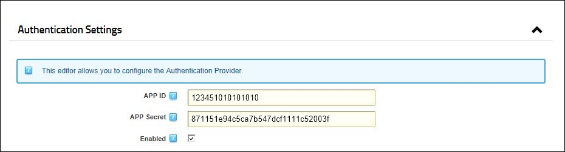
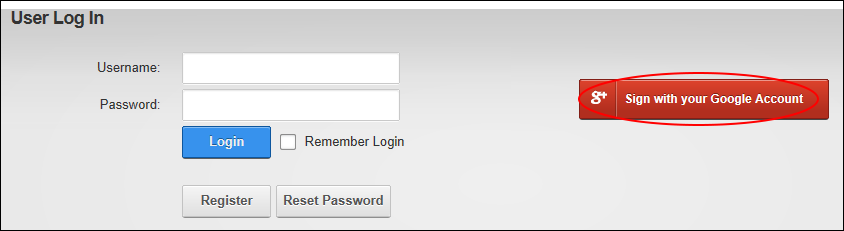

Configuring Google Authentication
How to enable or disable the DotNetNuke Google authentication system that allows users to login to DNN using their existing Google account to login to DotNetNuke.
Configure a custom login page, See "Enabling a Custom Login Page"
You will need to sign up for a Google Authentication account to complete this tutorial. This authentication system must be enabled by a SuperUser (See "Managing Authentication System Settings") before it can be viewed and configured. At Google API Console, add your login page to the redirect URL's. If you have multiple languages, you will also need to add those URL's too. E.g.: http://www.yoursite.com/de-de/login.aspx
- Navigate to Admin > Advanced Settings >
 Extensions - OR - Go to an Extensions module.
Extensions - OR - Go to an Extensions module.
- Expand the Authentication Systems section.
- Click the Edit
 button beside DotNetNuke Google Authentication Project.
button beside DotNetNuke Google Authentication Project.
- Expand the Authentication Settings section.
- At Enabled?, select from these options:
- Mark
 the check box to enable Google authentication.
the check box to enable Google authentication. - Unmark
 the check box to disable Google authentication. Note that any ID and Secret information you have added will not be removed from these fields unless you manually remove them. This allows you to re-enable this authentication system at any time without re-entering this information. Skip to Step 8.
the check box to disable Google authentication. Note that any ID and Secret information you have added will not be removed from these fields unless you manually remove them. This allows you to re-enable this authentication system at any time without re-entering this information. Skip to Step 8.
- In the APP ID text box, enter the information provided to you by Google.
- In the APP Secret text box, enter the secret code provided to you by Google.

- Click the Update Authentication Settings button. The Google login button is now displayed on the Login page and any Account Login modules.

-
See "Logging in with Google"